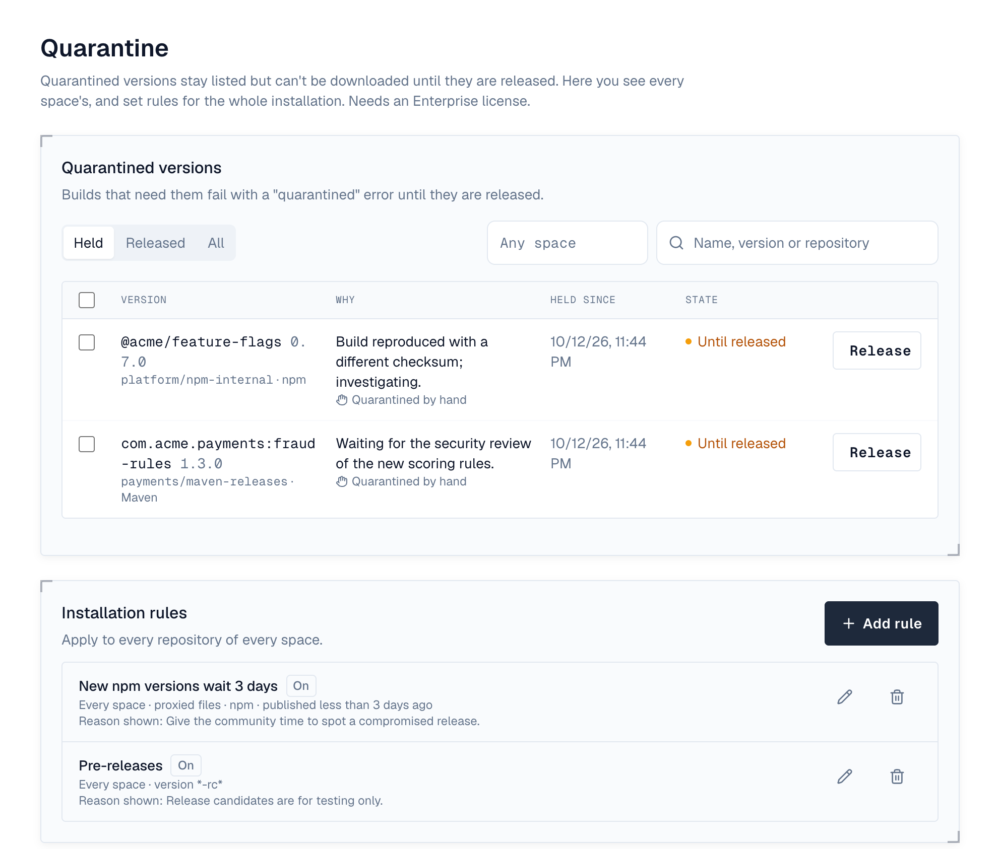

1. Overview
A quarantined version stays listed in its repository but can't be downloaded until someone releases it. Builds that need it fail with a clear quarantined error and the reason, instead of quietly using something else. Versions are quarantined by rules, as they are published or fetched by a proxy repository, or by hand. Needs an Enterprise license.
- Downloads, HEAD requests and checksum files of a quarantined version answer 403 with the reason quarantined and the rule's reason.
- Another Depotex linked to the repository (Depotex link) is refused too, and removes copies it cached.
- Quarantined versions stay in the version lists clients resolve from (such as maven-metadata.xml and npm package documents), unless the repository hides them (see Hidden versions). npm audit reports quarantined versions as high advisories.
- A released version is never quarantined again by a rule; it can still be quarantined by hand.
- Depotex also quarantines versions carrying unsafe content (oversized or hostile SBOMs, attestations or metadata) by itself, on every license tier: see Browse. They show as Refused content (automatic).
- A policy on SBOMs that denies what a version's SBOM lists (severe vulnerabilities, forbidden licenses) quarantines it too; those show as Refused by policy with the policy's message.
2. Hidden versions
Turn on Hide quarantined versions in a repository's Settings to leave quarantined versions out of the version lists clients resolve from, so builds pick another version instead of failing. A released version is listed again at once.
- Lists Depotex writes itself leave them out, such as a hosted conda channel's index.
- A list a proxy repository passes on as its upstream wrote it keeps them, and their downloads are refused: conda proxies, and conda groups for their proxy members, do so for now. Each format's page says which applies.
- With the switch off, quarantined versions stay listed and downloading them fails with quarantined.
3. Quarantine rules
Rules apply to new versions when their first file is published or fetched. There are rules at two levels:
- Space rules, in the space's Settings under Quarantine rules (maintainers and owners), with its other policies. A space rule can be narrowed to one repository.
- Installation rules, under Settings → Repositories → Quarantine (super admins), for every repository of every space.
| Setting | Meaning |
|---|---|
| Applies to | Uploads and proxied files, uploads only (hosted repositories), or proxied files only. |
| Formats | Which formats; none ticked means all. |
| Namespace, Name, Version | Patterns the version must match; * matches anything, ? one character, case doesn't matter; empty matches everything. A Maven name is groupId:artifactId (so com.acme:*), an npm name may have its @scope, and a PyPI name matches however it is written (Acme_Internal* matches acme-internal-tools). For example, version *-rc* holds back release candidates. |
| Published less than (days) | Only versions published less than this many days ago: proxied files by the upstream's date, uploads from when they're uploaded (a gem from its push, which is also the date Bundler sees). Their quarantine ends by itself when they are old enough. This holds back freshly published packages, the way malicious ones usually arrive. |
| Reason | Shown to anyone whose download is refused, and in the quarantine list. |
Every setting you fill in must match. When several rules match, one without an age limit wins; otherwise the one ending last.
When a proxied file's upstream doesn't say when it was published, an age rule treats it as just published when the file is fetched. A proxy that leaves out of its listings the versions it hasn't fetched yet that an age rule would hold (with Hide quarantined versions on; its format's page says whether it does) keeps a version whose publish date it doesn't know listed, and judges it when it is fetched. A proxy set to Pass through stores nothing, so rules don't hold the files it streams and hide nothing from its listings.
4. Quarantined versions
The space's Quarantine tab lists its quarantined versions, newest first, and Settings → Repositories → Quarantine lists every space's. Show the versions held, released or all, and search by name, version or repository (on the installation-wide list, also by space). Select several to release them together. A version's name opens it in the artifact browser, where its Security tab says what was found; its repository opens the repository.

- Release — Tick the versions, or choose Release on one, add a note if you like (it goes in the audit log), and confirm. They can be downloaded again at once.
- Quarantine by hand — In a repository's Versions tab, choose Quarantine next to a version and give a reason. Release there does the opposite.
A version blocked from quarantine (see below) leaves the held list for Blocked, marked with the rule that blocks it.
AI agents can quarantine and release versions too, through write tools, once an administrator allows it. They act as the person using them, need the same rights in the space, and are recorded in the audit log with via: mcp:<plugin>/<application>.
Versions held by an age rule show until when; once that time passes they're downloadable again and are listed as ended.
5. Block, or Delete and block
When a quarantined version must never be used, don't release it: choose Block… or Delete and block… from the ⋯ menu next to it (or select several). Both add a rule to the block list that refuses downloads, uploads and proxy fetches of the version from then on, including a rebuilt copy published again under the same version, and the same files under another name (by their SHA-256).
| Action | What happens |
|---|---|
| Block | The version stays stored and quarantined, listed under Blocked. Releasing it is refused. Unblock (from the same menu) deletes its block-list rule and puts it back in quarantine, held until someone releases it. |
| Delete and block | The version and its files are deleted at once (there is no trash; storage is freed later), and the rule keeps refusing it. The rule records where the version was, why it was quarantined, and that it was deleted. Needs the right to delete versions. You type the version to confirm. |

In the dialog you choose:
- Where: this repository only, every repository in the space (the default), or every space. You see only the places you may block in: the space and its repositories with the space's block-list permission, every space with the installation's.
- Every version of the name, not only this one. Other stored versions are then refused too, but they aren't deleted; the dialog says how many there are.
- Reason (required): shown to anyone whose download or upload is refused, and kept with the rule.
Blocking needs an Enterprise license. Files under 128 bytes, checksum files and a Docker image's layers aren't compared by content.
6. Repository Quarantine tab
Each repository has a Quarantine tab for its admins (repo:quarantine, part of the repository Admin role) and for the space's quarantine managers. It lists the repository's quarantined versions with the same actions, and the repository's own quarantine rules.
- Repository admins can quarantine, block, and delete and block the repository's versions, with blocks in that repository only.
- They can release only what was quarantined by hand or by the repository's own rules. A version held by a space or installation rule, by a policy, or automatically needs a space quarantine manager.
- Their rules apply to that repository only.

7. Without Enterprise
Rules don't apply and nothing new can be quarantined or blocked, but versions already quarantined or blocked stay so, and you can still list and release them, unblock them and delete rules.
8. Events
artifact.quarantine is raised when a version is quarantined (by hand: before and after, so policies can refuse it; by a rule: after). artifact.release is raised when one is released (by hand: before, refused if a policy or plugin fails, and after; when an age rule ends: after). quarantine.rule.create, .update and .delete wrap rule changes. artifact.block and artifact.reject (Delete and block) are raised before and after blocking a quarantined version, so policies can refuse them, followed by blocklist.rule.create and, when deleting, artifact.delete for each file. Use automation to notify someone when versions are quarantined. Everything is recorded in the audit log. See Events.
9. Permissions
| Permission | Who | Allows |
|---|---|---|
| spaces:quarantine:manage | Space maintainers and owners | The space's quarantine list, quarantining and releasing its versions, and its rules |
| artifacts:quarantine:manage | Super admins only | Settings → Repositories → Quarantine: every space's quarantined versions and the installation rules |
| repo:quarantine | Repository admins | The repository's Quarantine tab, as above |
| spaces:blocklist:manage, artifacts:blocklist:manage | Space maintainers and owners; super admins | Blocking in the space and its repositories; in every space |
| spaces:artifacts:delete, repo:delete | Space maintainers and owners; repository maintainers and admins | Delete and block |